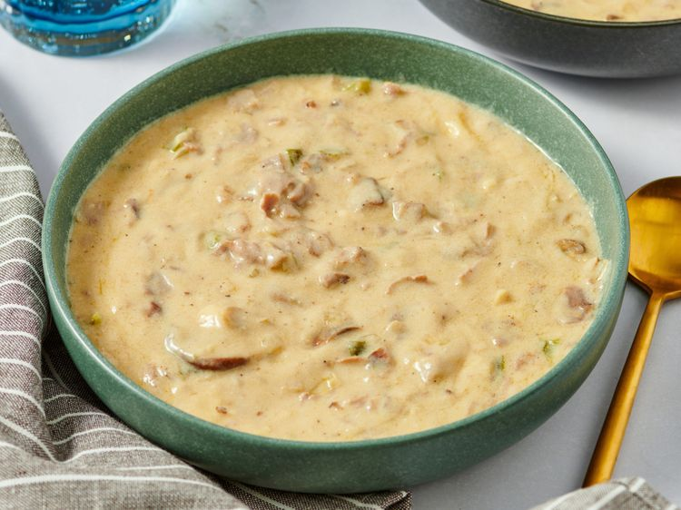

Steak Soup recipe

A creamy, cheesy soup that tastes just like a Philly cheese steak sandwich!
Ingredients
- ¾ cup unsalted butter
- 1 white onion, diced
- 1 green bell pepper, diced
- 1 (8 ounce) package sliced fresh mushrooms
- ⅔ cup all-purpose flour
- 6 cups milk
- 1 (10.5 ounce) can beef consommé
- 1 teaspoon salt
- 1 teaspoon ground black pepper
- 1 (8 ounce) package provolone cheese, diced
- 12 ounces sliced roast beef, chopped
Steps
- WIP
Home